Devlog Thirteen Overview
I think it's about time I start working on the biomes. Currently they're really small. There's also a bunch of items in the game that the player just can't get naturally from the world. So this update is going to help solve those problem. It's also going to add a bunch of stuff, because of course I'm going to do that.
Main Features
The first bit of work I did towards the biomes is making them a lot bigger. I think I even want them a bit bigger in the future, but I want player opinion on that matter before I do so. Right now you can stand in the middle of the biomes and likely not see another one.
After making the biomes a bit bigger, I thought it might be time to finally add another biome: the Jungle Biome. In my personal Minecraft world, I actually live in a Jungle Biome. Though I've torn all the trees down, and flattened the land. This biome brings new blocks and plant life to the game.

Now how about another biome: Red Desert. It's totally not just my version of the Badlands from Minecraft. Now right off the bat, I will say that I'm not 100% happy with it. I'm just having difficulties making it look as good as I'd like. Maybe that will change when I finally add water or more complicated world generation. But for now, it's passable. And it also finally allows the player to actually get the terracotta blocks within the world. I also added a new block set: Red Sand. You'll see more of that in the blocks section of the devlog.
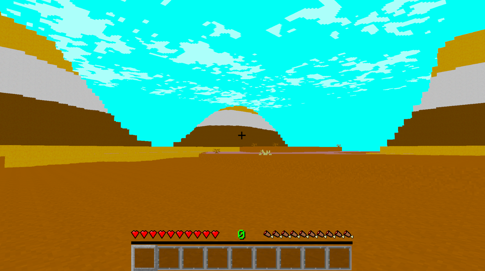
After adding in two new biomes, I thought I'd go ahead and make some of the other biomes feel and look better. While also adding in some new and old-ish blocks into them.
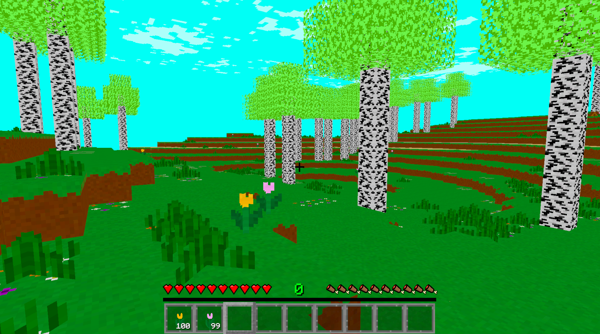
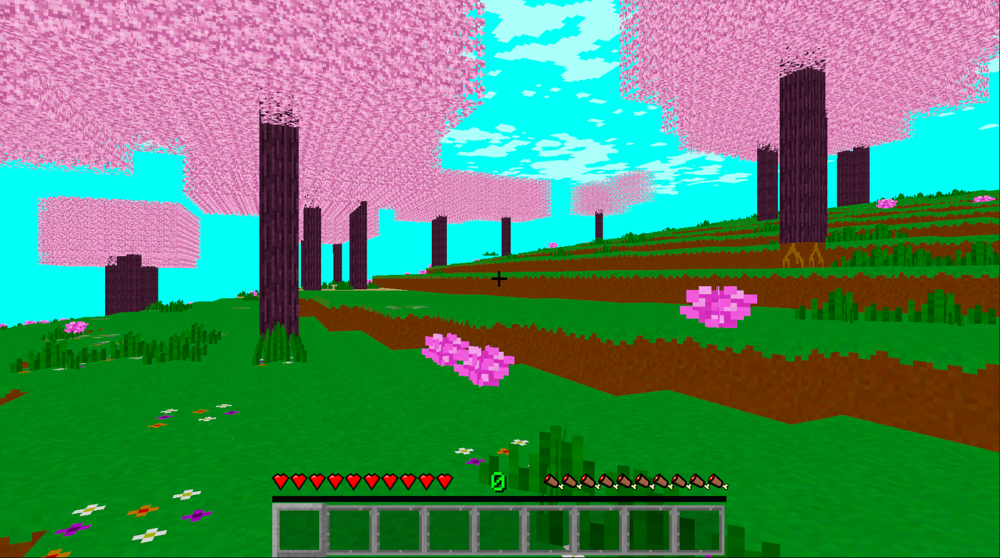
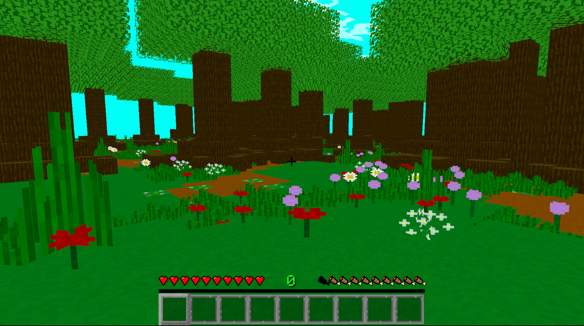
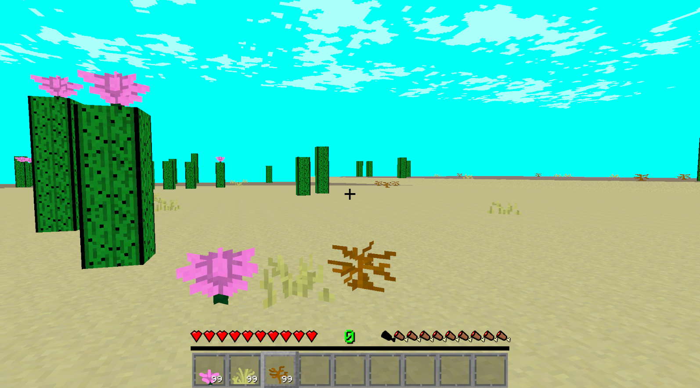
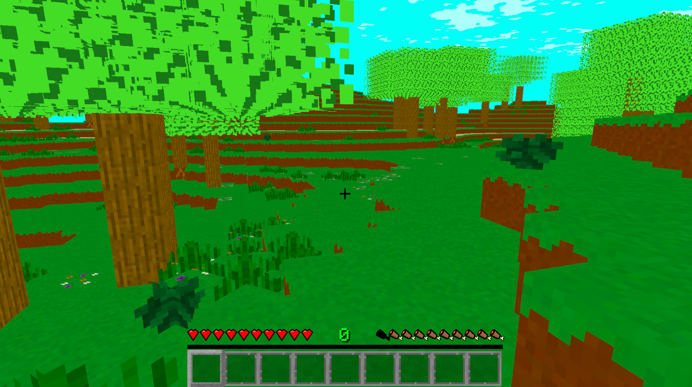
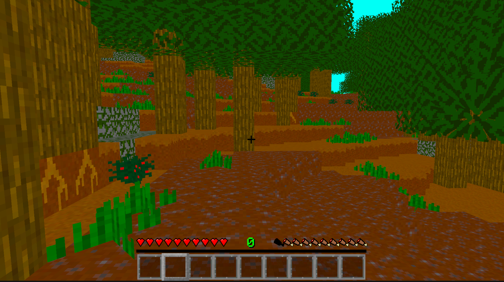
There's also some biomes that didn't really need anything since they're already plenty full of stuff. And really I should tone it down a bit in them.
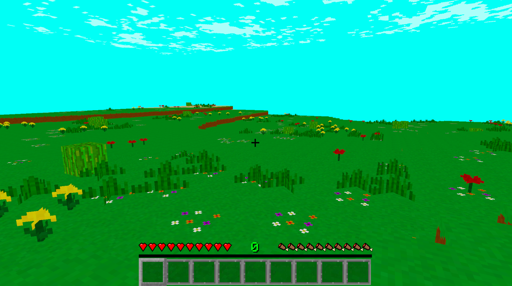
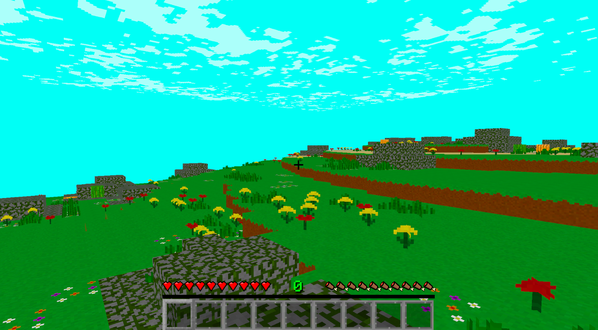
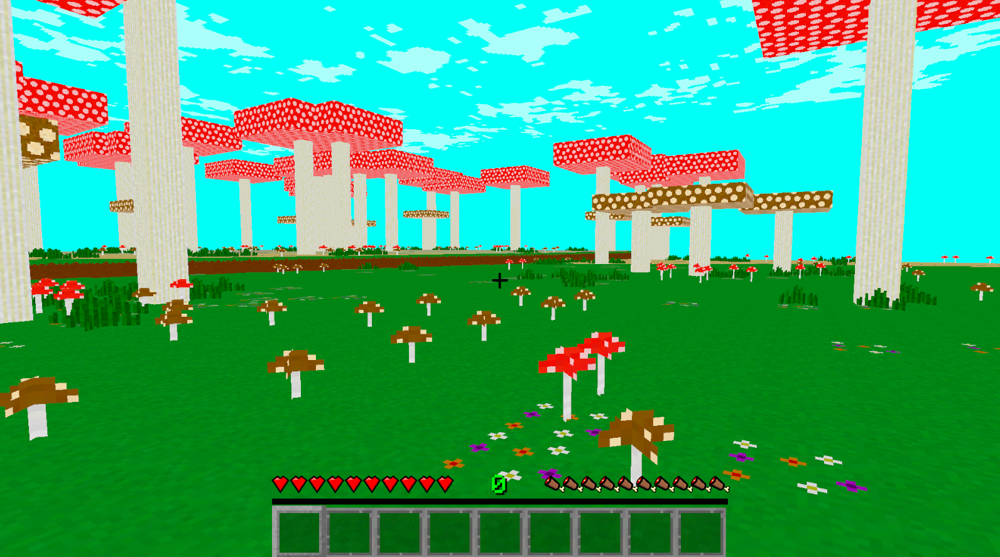
I really didn't add much to all the biomes. Just a bit more plant life to liven them up a bit. The Dark Oak biome is a funny one by the way. I'm using it to dump all the extra flowers I've made. And the pink bush in the Cherry Wood Biome was my sister's idea. You can thank her for that. It's really not a lot of stuff, but I think it really helps.
Blocks
The biomes will of course have a whole bunch of new blocks to them. This first segment of blocks will be everything found in the Jungle Biome. So here are the new Jungle Wood blocks, and a picture of the Jungle Biome again. You can check out the new Bamboo pretty good in that.
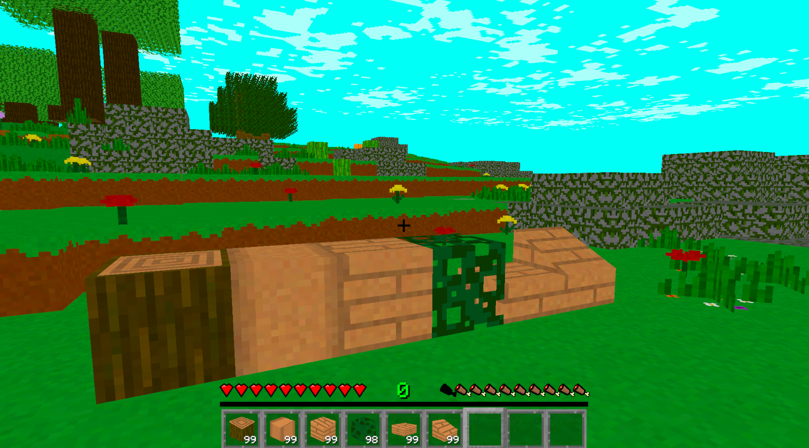
With the bamboo, since it is technically a wood, and the blocks are in Minecraft, I made it where you can craft Bamboo into wood. So here are those wood blocks.
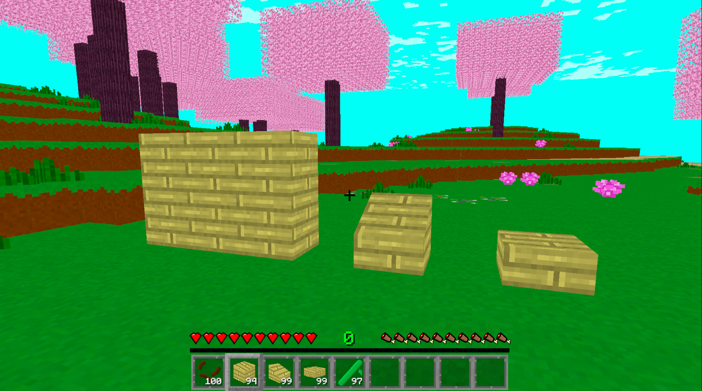
I also made a stair variant of all the wood blocks finally.
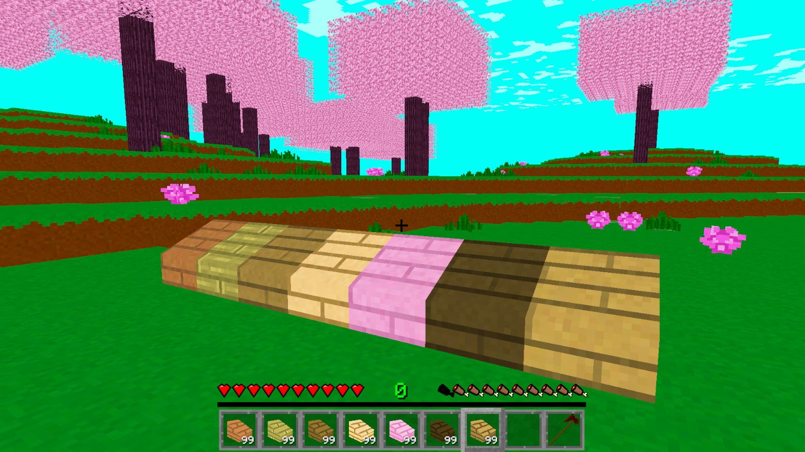
The Red Sand blocks that can be found in the new Red Desert biome can be crafted into quite a few different blocks.
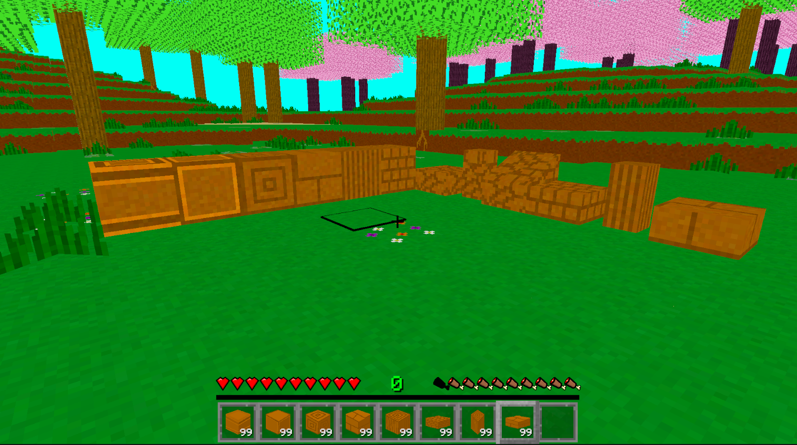
Now I'm too lazy to reopen back up the project, but there was also all the new plant life blocks I added into some of the biomes. You can look closely at the biome pictures to see more into that if you really want.
Conclusion
This devlog update took a little longer to release, and I'm fine with that. There's a bit more content in this update. At least it took longer to make the content. And overall, I'm happy with the update.
Now that the world is starting to look like it's actually alive, maybe it's time to start properly adding in actual life. Not just plants, but things moving around. I'm not saying that's the next update, but it's possible. At the very least, I'm going to start working away at it on the side. I do know for sure that the next update will continue making the game feel more complete.
Side topic because I want to talk about this. I was thinking what I would do if someone offered to help work on this project with me. Would I be happy for the help? Of course. But would I actually let them help? I'm not sure. There's a lot of work to be done, but this project is also a learning excersize for me, and also a sort of passion project. I honestly think I'd turn down their help. That is unless their help was better textures, UI, and/ or sounds. Those are all things that I could be much better, and I don't have the talent for.